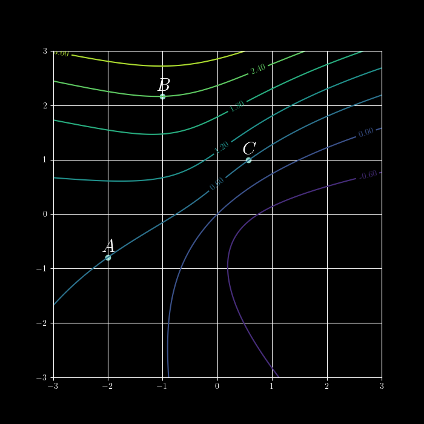
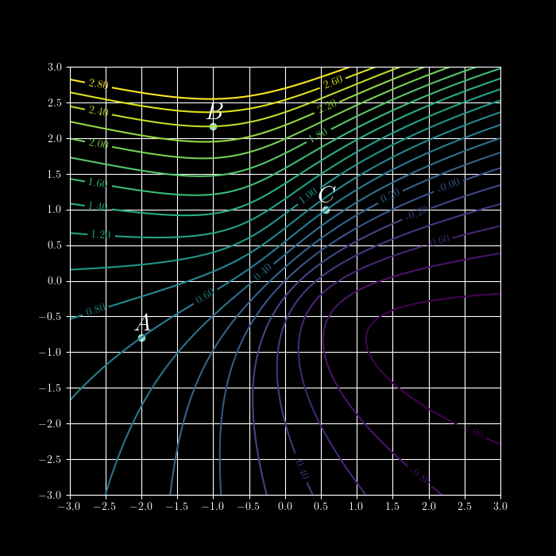

Drew Youngren dcy2@columbia.edu
A scalar field $f:\RR^n \to \RR$ is a function on a multidimensional vector space. Level sets are the sets of all input points with a particular output.
The definition of limit for a function of several variables needs barely be changed.
Compute the following limit or show it does not exist. \[\lim\limits_{(x,y) \to (0,0)}\frac{x^2y}{x^2 + y^2} \]
Solution...
By substituting $x = r \cos \theta$, $y = r\sin \theta$ we make the limit \[ \lim\limits_{(x,y) \to (0,0)} f(x,y) \] becomes
\[\lim\limits_{r \to 0^+} f(r \cos \theta, r \sin \theta). \]
\[\lim\limits_{(x,y) \to (0,0)}\frac{x^2y}{x^2 + y^2} = \lim\limits_{r \to 0^+} \frac{(r^2 \cos^2 \theta)r \sin\theta}{r^2\cos^2\theta + r^2 \sin^2 \theta}\]
\[-1 \leq \cos^2 \theta \sin \theta \leq 1\]
\[\lim\limits_{r \to 0^+} -r \leq \lim\limits_{r \to 0^+} \frac{r^3 \cos^2 \theta \sin\theta}{r^2} \leq \lim\limits_{r \to 0^+} r\]
\[ \lim\limits_{r \to 0^+} r \cos^2 \theta \sin \theta = 0 \]
We could try to naïvely define a derivative of a multivariable function. \[ f'(\vec a) = \lim\limits_{\vec x \to \vec a} \frac{f(\vec x) - f(\vec a)}{\vec x - \vec a}\]
We could try to naïvely define a derivative of a multivariable function. \[ f'(\vec a) = \lim\limits_{\vec x \to \vec a} \frac{f(\vec x) - f(\vec a)}{\vec x - \vec a}\]
Better to start with a question a derivative can answer.
Walking along a route $\langle x(t), y(t) \rangle$ through a field with elevation $f(x,y)$, what slope do you encounter at each $t$?
Let $f(x,y)$ be a scalar field. The partial derivative of $f$ with respect to $x$ is
\[f_x(a,b) = \lim\limits_{h \to 0} \frac{f(a + h, b) - f(a,b)}{h}.\]Let $f(x,y)$ be a scalar field. The partial derivative of $f$ with respect to $y$ is
\[f_y(a,b) = \lim\limits_{h \to 0} \frac{f(a, b+h) - f(a,b)}{h}.\]All of these are equivalent.
\[f_x = \frac{\partial f}{\partial x} = \partial_x f = f^{(1,0)}\]and there are many more.
Compute:
$\displaystyle \frac{\partial}{\partial x} \left( x^2y - \sin(x-2y) \right)$
$\displaystyle \frac{\partial}{\partial y} \left( x^2y - \sin(x-2y) \right)$
$\displaystyle \frac{\partial}{\partial z} \left( \frac{z^2 \tan^{-1}(\sqrt{x^2+1})}{\cosh(xy)} \right)$
Since the partial derivative of a function is a function, we can iterate the process. \[f_{xx} = \frac{\partial^2 f}{\partial x^2}\] \[f_{xy} = \frac{\partial^2 f}{\partial y \partial x}\] etc.
Tbe heat equation gives a relation on the temperature $u$ as a function of position $x$ and time $t$. \[u_t = u_{xx}\]
A quantity like $\frac{\partial^2 f}{\partial x \partial y}$ is a little harder to wrap ones head around.
Compute all mixed partials of the following functions:
$f(x,y) = xy^3 - y \sin x$
$r(x,t) = \frac{x}{x+t}$
$u(p,q) = e^{-p\sqrt{q}}$
If the relevant mixed partials exist and are continuous in the neighborhood of a particular position $\vec x_0$, then \[ \frac{\partial^2}{\partial x_i \partial x_j} f(\vec x_0) = \frac{\partial^2}{\partial x_j \partial x_i} f(\vec x_0) \] for all $i,j$.
Compute the partial derivative $g_{zzxw}$ for \[g(w,x,y,z) = w^2x^3yz^2 + \sin\left(\frac{xy}{z^2}\right).\]
\[ g_{zzxw} = g_{wxzz} = 2w(3x^2)(2y)\]
We can estimate values of partial derivatives even when lacking a formula for the underlying function.
Does the following increase or decrease the accuracy of the estimates?
